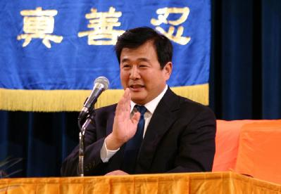

23/5/05 — Từ DAJIYUAN.COM
Phương Đàm, ký giả Đại Kỷ Nguyên tại Tô-rôn-tô, Ca-na-đa
Khoảng 10:30 sáng ngày 22/5/2005, người sáng lập Pháp Luân Công, ông Lý Hồng Chí, đã tới đại sảnh nơi các học viên Pháp Luân Công mở cuộc hội đàm tại Tô-rôn-tô, và ông làm rõ một số điều mà nhiều người thắc mắc như: về cuộc đàn áp Pháp Luân Công do Trung Cộng (ĐCSTQ) khai thuỷ từ tháng 7/1999, về nguyên nhân mà nước ngoài đầu tư vào Trung Quốc, về vấn đề thoái đảng, về sách lược cuộc đàn áp Pháp Luân Công của Trung Cộng, về vấn đề ổn định xã hội Trung Quốc sau khi Trung Cộng sụp đổ.

Ông Lý Hồng Chí, người sáng lập Pháp Luân Công tại hội nghị của các học viên Pháp Luân Công, Tô-rôn-tô, Ca-na-đa, ngày 22/5/2005.
Ông Lý Hồng Chí nói rằng, hiện nay nhiều người ngoại quốc tới đầu tư vào Trung Quốc, đó không phải là vì Trung Cộng (Đảng cộng sản Trung Quốc) có biện pháp gì hấp dẫn đầu tư quốc ngoại, hoặc là do Trung Quốc có tài nguyên đặc thù nào, mà thực ra, là do người Trung Quốc lao động cần cù, làm gì cũng làm từ đầu tới cuối. Nhiều dân tộc khác, thì không thế, đã kiếm đủ tiền rồi thì thôi không làm nữa. Chính vì người Trung Quốc lao động cần cù, do đó đã hấp dẫn các nhà đầu tư nước ngoài. Nhưng Trung Cộng đang lợi dụng chính điều này, lợi dụng tiền bạc đầu tư để bức hại Pháp Luân Công.
Nói về đại trào lưu thoái đảng, ông Lý Hồng Chí nói rằng hiện nay rất nhiều người đã thấy mặc dù Pháp Luân Công đang bị đảng cộng sản tà ác đàn áp hà khắc, nhưng Pháp Luân Công càng ngày càng hưng thịnh. Nhiều người thấy rằng Pháp Luân Công nhất định sẽ thắng, và họ cũng ủng hộ Pháp Luân Công.
Trung Cộng cũng tự hiểu rằng thời hoàng kim của nó đã qua, rất nhiều người của đảng đang lo toan cho tương lai của mình. Nhiều đảng viên cũng nhận thức ra bản chất tà ác của Trung Cộng, và họ lần lượt liên tục thoái xuất khỏi Trung Cộng. Làn sóng thoái đảng đặt Trung Cộng vào cửa tử, làm nó khiếp sợ mất ăn mất ngủ.
Ông Lý Hồng Chí chỉ rõ rằng, sự khác biệt lớn nhất giữa cuộc đàn áp Pháp Luân Công với những cuộc đàn áp khác trong lịch sử là ở chỗ: các cuộc đàn áp khác đều công khai, còn Trung Cộng tiền hành đàn áp Pháp Luân Công một cách mờ ám. Lúc cuộc đàn áp bắt đầu vào tháng 7/1999, âm mưu của Trung Cộng là dùng biện pháp mạnh để khủng bố các đệ tử Đại Pháp và giải quyết trong thời gian ngắn, nhưng chính kế hoạch đó đã thất bại.
Các kinh nghiệm tích luỹ qua các cuộc đàn áp trong quá khứ và từ các thủ đoạn lưu manh, Trung Cộng đã phát hiện rằng đàn áp công khai sẽ dẫn đến việc dân chúng hiểu ra và phản đối bức hại, do đó Trung Cộng tiến hành cuộc đàn áp một cách mờ ám. Bề ngoài tưởng như hoà bình, nhưng thực tế cuộc đàn áp chưa từng một lần dừng nghỉ.
Về vấn đề sau khi đại trào lưu thoái đảng khiến Trung Cộng sụp đổ, xã hội Trung Quốc liệu có loạn không, ông Lý Hồng Chí nói rằng, quyết định tiêu diệt Trung Cộng là của chư Thần. Trong lịch sử, chư Thần chưa hề thả lỏng khống chế đối với dân tộc hay cá nhân nào. Tại chiến dịch hạ bệ cộng sản ở thế gian cõi người này, một khi chư Thần đã muốn giải thể nó, thì chỉ sau vài tháng nó sẽ sụp đổ hoàn toàn.
Ông Lý Hồng Chí nói: Nếu chư Thần không muốn xã hội loạn, thì xã hội không thể loạn.
{kind=link}